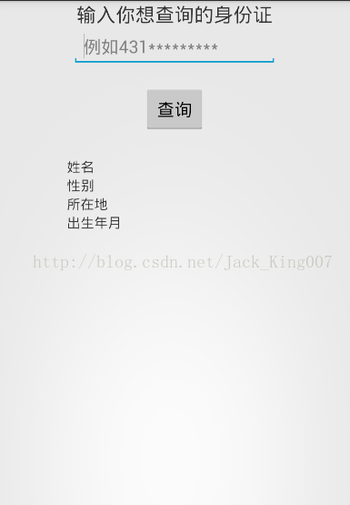

练手小项目（2）生活小助手身份证查询
昨天帮一个小伙子做APP，就花了一天的时间把功能做出来了，UI不怎么美观 我只把我这一部分代码，放在上面。数据接口，你们要自己去找了，我的数据接口一天就50次请求，
如果找不到数据接口清百度《API数据接口》 由于要给你展示，所以就给一个展示页面
这一章就先讲身份证查询

界面很简单。就是一个Edittext 获取身份证号，BUtton进行数据提交 联网解析数据，然后在下面显示 ，不说基础的话，这篇文章就没说的意义了，我还是说下吧
首先实例化 Edittext，BUtton 和四个textview 直接贴代码吧
package com.example.helper;
import org.json.JSONException;
import org.json.JSONObject;
import com.example.helper.utils.HttpUtils;
import com.example.helper.utils.HttpUtils.OnNetWorkResponse;
import com.example.helper.utils.UrlApi;
import android.app.Activity;
import android.os.Bundle;
import android.view.View;
import android.widget.Button;
import android.widget.EditText;
import android.widget.TextView;
public class IdSearch extends Activity {
private EditText editText;
private Button button;
private TextView id_name_sex,id_name_address,id_name_year;
@Override
protected void onCreate(Bundle savedInstanceState) {
super.onCreate(savedInstanceState);
setContentView(R.layout.idsearch);
//第一步 首先实例化 Edittext，BUtton 和四个textview
button = (Button) findViewById(R.id.id_serhch);
editText = (EditText) findViewById(R.id.id_num);
id_name_sex = (TextView) findViewById(R.id.id_name_sex);
id_name_address = (TextView) findViewById(R.id.id_name_address);
id_name_year = (TextView) findViewById(R.id.id_name_year);
}
public void btn(View view){
//2.得到用户输入的数据进行拼接URL 进行网络数据连接
String str = editText.getText().toString().trim();
String url=UrlApi.ONE+str;
//3.通过自己封装的联网工具类，就可以得到json
HttpUtils.RequestNetWork(url, new OnNetWorkResponse() {
@Override
public void ok(String response) {
try {
// { json数据接口
// "error_code": 0,
// "reason": "SUCCESS",
// "result": {
// "area": "湖南省长沙市长沙县",
// "birthday": "1993-6-30",
// "sex": "男"
// }
// }
JSONObject o1=new JSONObject(response);
int error_code = o1.getInt("error_code");
System.out.println(error_code);
if (error_code==0) {
//第一个为大括号用jsonObject
JSONObject o2 = o1.getJSONObject("result");
//进行复制
id_name_sex.setText("性别: "+o2.getString("sex"));
id_name_address.setText("所在地: "+o2.getString("area"));
id_name_year.setText("出生日期: "+o2.getString("birthday"));
}
} catch (JSONException e) {
e.printStackTrace();
}
}
@Override
public void error(String error) {
}
});
}
}
还有三个功能没写，写完就法源码吧，如果需要源码的可以留言 我发过去